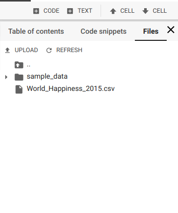
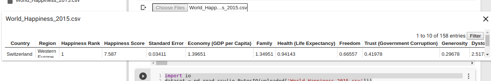
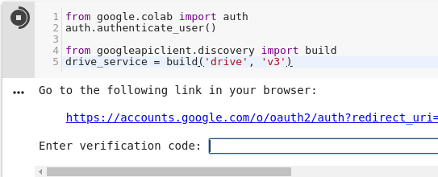

O Google Colab é uma ferramenta criada pelo Google que permite que qualquer pessoa consiga produzir e rodar desde os notebooks IPython (.ipynb) mais simples até treinar um modelo de deep learning mesmo sem possuir uma GPU. É só usar sua conta Google e você terá acesso a 12GB de RAM, GPU/TPU (desde que não abuse e use para ganhar criptomoedas), sendo todo seu trabalho sincronizado no Drive.
Um dos primeiros problemas que aparecem ao usar o Colab é: como carregar arquivos nessa ferramenta, já que ele não tem acesso ao meu HD? Nesse post são listados 5 jeitos de fazer isso, cada um com suas vantagens e desvantagens.
1. Usando um link
Basta ver a documentação do método read_csv da biblioteca pandas para ver que uma url pode ser usada para carregar seu dataset. O jeito mais fácil de disponibilizar um link é fazendo o upload dos dados para o GitHub, mas nesse caso existe a limitação de que o arquivo deve ter menos de 25MB (um arquivo maior não pode ser mantido em seu repositório).
dataset = pd.read_csv(*link*)
Algumas alternativas ao GitHub como GitLab e BitBucket possuem um limite mais flexível, o primeiro depende das configurações da sua organização e no segundo caso, o arquivo deve respeitar o limite de tamanho do repositório, que não pode ser maior que 2GB.
2. Fazendo upload de sua máquina via código
Método apresentado no post do Towards Data Science: 3 Ways to load csv into colab
O Colab possibilita que você insira arquivos do seu computador no notebook através do método files do módulo google.colab. Ao chamar files.upload(), uma caixa de seleção vai aparecer como na imagem abaixo:

Depois de escolher o arquivo, o objeto uploaded acima, que é um dicionário com os dados em formato de bytes, pode ser manipulado para virar um objeto tratado pelo pandas. Para isso, usamos a biblioteca io, como mostrado no exemplo abaixo.
import io
dataset = pd.read_csv(io.BytesIO(uploaded['file.csv']))
Apesar de ser prático para um estudo rápido sobre um arquivo pequeno, por exemplo, essa feature pode apresentar incompatibilidade com algumas versões de alguns navegadores, então nem sempre o método é aplicável.
3. Fazendo upload de sua máquina via colab
Uma alternativa relativamente recente, oferecida pelo próprio Colab, é usar a seção Files do menu lateral.

Ao cliclar no botão UPLOAD, uma janela de seleção semelhante à do item anterior será aberta. Depois do upload, o arquivo é listado nessa seção. Com 2 cliques é possível ainda visualizar (e filtrar!) o conteúdo do dataset.

No entanto, a maior mudança em relação ao google.colab é que, além de apresentar maior compatibilidade com os navegadores, o arquivo não precisa ser convertido. Dá pra usar read_csv passando o nome do arquivo e a extensão.
Os dois últimos métodos possuem algumas desvantagens em comum:
-
Toda vez que o notebook for aberto, o processo de upload precisa ser repetido ( o que prejudica muito a reproducibilidade do que você fez no notebook);
-
Um arquivo grande vai demorar bastante, principalmente se a sua internet não for tão rápida.
Por isso, os dois se tornam mais úteis quando se quer fazer algo rápido e que não precisa ser compartilhado com outras pessoas.
4. Google Drive
Ao abrir uma pasta no Google Drive, você pode observar que ela possui um hash, um código em sua url. Bem, dá para usar esse link para ler os arquivos dessa pasta.
O primeiro passo é a aceitação autenticação. Ao rodar o código abaixo e clicar no link, você vai recer um token para copiar e colar na caixa que é exibida no notebook.
from google.colab import auth
auth.authenticate_user()
from googleapiclient.discovery import build
drive_service = build('drive', 'v3')

Depois de se autenticar, você já pode usar o objeto drive_service para consultar os arquivos. Com a API do Google Drive, é possível fazer a consulta especificando um parâmetro do método files().list():
response = drive_service.files().list(q=" '"+folder +"' in parents",
spaces='drive',
fields='nextPageToken, files(id, name)').execute()
Especificando '"+folder+"' in parents são filtrados os arquivos que estão dentro da pasta folder.
Depois de recuperados os arquivos, iterar sobre eles, vamos recuperar seus IDs e usar files().get_media(fileId=id) para baixar o arquivo através da API. Depois disso, os bytes podem ser traduzidos e o arquivo tratado.
Tudo isso deve ser feito dentro de um loop.
Abaixo, um código completo com o exemplo de arquivos de imagens
page_token = None
while True:
response = drive_service.files().list(q="mimeType='image/png' and '"+folder +"' in parents",
spaces='drive',
fields='nextPageToken, files(id, name)',
pageToken=page_token).execute()
for file in response.get('files', []):
# Process change
file_id = file.get('id')
request = drive_service.files().get_media(fileId=file_id)
downloaded = io.BytesIO()
downloader = MediaIoBaseDownload(downloaded, request)
done = False
while done is False:
# _ is a placeholder for a progress object that we ignore.
# (Our file is small, so we skip reporting progress.)
_, done = downloader.next_chunk()
downloaded.seek(0)
if('.csv' in file.get('name')):
datasets.append(io.BytesIO(downloaded.read()))
page_token1 = response.get('nextPageToken', None)
if page_token1 is None:
break
Com os arquivos recuperados, para usar o dataset, podemos passar o objeto para read_csv, por exemplo:
dataset = pd.read_csv(datasets[0])
Com essa alternativa mais complexa, é preciso ter cuidado ao filtrar os arquivos, além de compartilhar toda a pasta com quem precisar reproduzir o estudo feito usando essa técnica.
5. Arquivos compactados
O último método é na verdade um caso específico que pode acontecer ao usar qualquer um das opções anteriores.
Alguns tipos de arquivos compactados não são lidos facilmente pelo pandas, como os disponilizados pelo IMDb. Para tratá-los, podemos usar a biblioteca gzip para descompactar e o método urllib do módulo six.moves para baixar o dataset. E voilà:
from six.moves import urllib
import gzip
handle = urllib.request.urlopen('https://datasets.imdbws.com/title.basics.tsv.gz') #download
file = gzip.GzipFile(fileobj=handle) #unzip
movies = pd.read_csv(file, sep="\t")
Considerações finais
Cada método tem seu nível de dificuldade e uma limitação quanto ao tamanho da massa de dados que podem ser carregados de forma eficiente, cabe a cada um ver qual se encaixa melhor em cada situação.
Nos links, existe a referência para uma alternativa ao passo 4 e alguns métodos para salvar arquivos a partir do Colab.
Até a próxima!
Links
API de busca de arquivos do Google Drive
Material do próprio Colab que contém maneiras de salvar arquivos
Twitter Facebook Google+